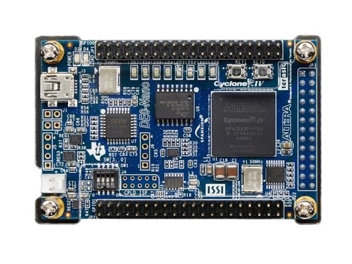

Bienvenidos al curso Electrónica Digital II
El curso de Electrónica Digital II se orienta al trabajo sobre técnicas, lenguajes, ambientes y estrategias de programación utilizadas en dispositivos digitales usados principalmente en soluciones basadas en sistemas embebidos con características de procesamiento independiente, tales como FPGA`s y microcontroladores.
Digitalización y Control Ágil para Procesos Complejos
La fuerte tendencia hacia la digitalización de los sistemas electrónicos, el surgimiento de procesos cada vez más complejos que requieren un control y la necesidad de hacer que los procesos de diseño sean cada vez más ágiles, efectivos y eficientes, nos obligan a buscar sistemas y herramientas que faciliten estas labores y nos permitan dar soluciones rápidas y acertadas
Competencias Clave en Ingeniería para Soluciones Éticas y Efectivas
-
Capacidad de identificar, formular y resolver problemas complejos de ingeniería mediante la aplicación de principios de ingeniería, ciencias y matemáticas.
-
Capacidad de aplicar el diseño de ingeniería para producir soluciones que satisfagan necesidades específicas considerando la salud pública, la seguridad y el bienestar, así como factores globales, culturales, sociales, ambientales y económicos.
-
Capacidad para comunicarse de manera efectiva con una variedad de audiencias.
-
Capacidad de reconocer responsabilidades éticas y profesionales en situaciones de ingeniería y emitir juicios informados, que deben considerar el impacto de las soluciones de ingeniería en contextos globales, económicos, ambientales y sociales.
-
Capacidad para funcionar de manera efectiva en un equipo cuyos miembros juntos brindan liderazgo, crean un entorno colaborativo e inclusivo, establecen metas, planifican tareas y cumplen objetivos.
-
Capacidad de desarrollar y realizar experimentos apropiados, analizar e interpretar datos y utilizar el juicio de ingeniería para sacar conclusiones.
-
Capacidad de adquirir y aplicar nuevos conocimientos según sea necesario, utilizando estrategias de aprendizaje adecuadas.